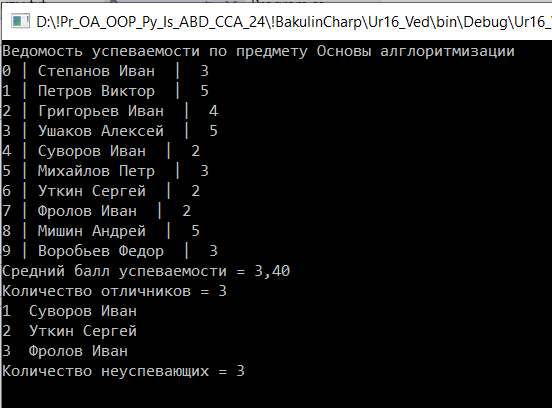

| Тема 6. Пример формирование ведомости успеваемости учащихся. | ||
| Назад | ||
|
Задача. Создать ведомость успеваемости учащихся по предмету Основы алгоритмизации.
Код решения задачи using System;
using System.Collections.Generic;
using System.Linq;
using System.Text;
using System.Threading.Tasks;
namespace Ur16_Ved
{
internal class Program
{
static void Main(string[] args)
{
//Объявление массива без указания кол элементов
string[] fio; // фамилия имя
int[] otc; // оценка
int s = 0;
double srb = 0.0; //средний балл
int colotl = 0; //количество отличников
int colN = 0; //количество неуспевающих
//Выделение 10 элементов в памяти ПК
fio = new string[10];
otc = new int[10];
//ИНИЦИАЛИЗАЦИЯ МАССИВА
fio[0] = "Степанов Иван"; otc[0] = 3;
fio[1] = "Петров Виктор"; otc[1] = 5;
fio[2] = "Григорьев Иван"; otc[2] = 4;
fio[3] = "Ушаков Алексей"; otc[3] = 5;
fio[4] = "Суворов Иван"; otc[4] = 2;
fio[5] = "Михайлов Петр"; otc[5] = 3;
fio[6] = "Уткин Сергей"; otc[6] = 2;
fio[7] = "Фролов Иван"; otc[7] = 2;
fio[8] = "Мишин Андрей"; otc[8] = 5;
fio[9] = "Воробьев Федор"; otc[9] = 3;
//Выести ведомость успеваемости
Console.WriteLine("Ведомость успеваемости по предмету Основы алглоритмизации");
for (int i = 0; i < 10; i++)
{
Console.WriteLine($"{i} | {fio[i]} | {otc[i]}");
}
//Найти средний балл успеваемости.
for (int i = 0; i < 10; i++)
{
s = s + otc[i];
}
srb = s / 10d;
Console.WriteLine($"Средний балл успеваемости = {string.Format("{0:f2}",srb)}");
//Определить количество отличников.
for (int i = 0; i < 10; i++)
{
if (otc[i]==5)
{
colotl++;
}
}
Console.WriteLine($"Количество отличников = {colotl}");
//Вывести список неуспевающих и их количество.
int n=0;
for (int i = 0; i < 10; i++)
{
if (otc[i] == 2)
{
n++;
colN++;
Console.WriteLine($"{n} {fio[i]}");
}
}
Console.WriteLine($"Количество неуспевающих = {n}");
Console.ReadKey();
}
}
}
 |
||
| Конспект подготовлен Бакулиным А. М. 2022 год. | ||